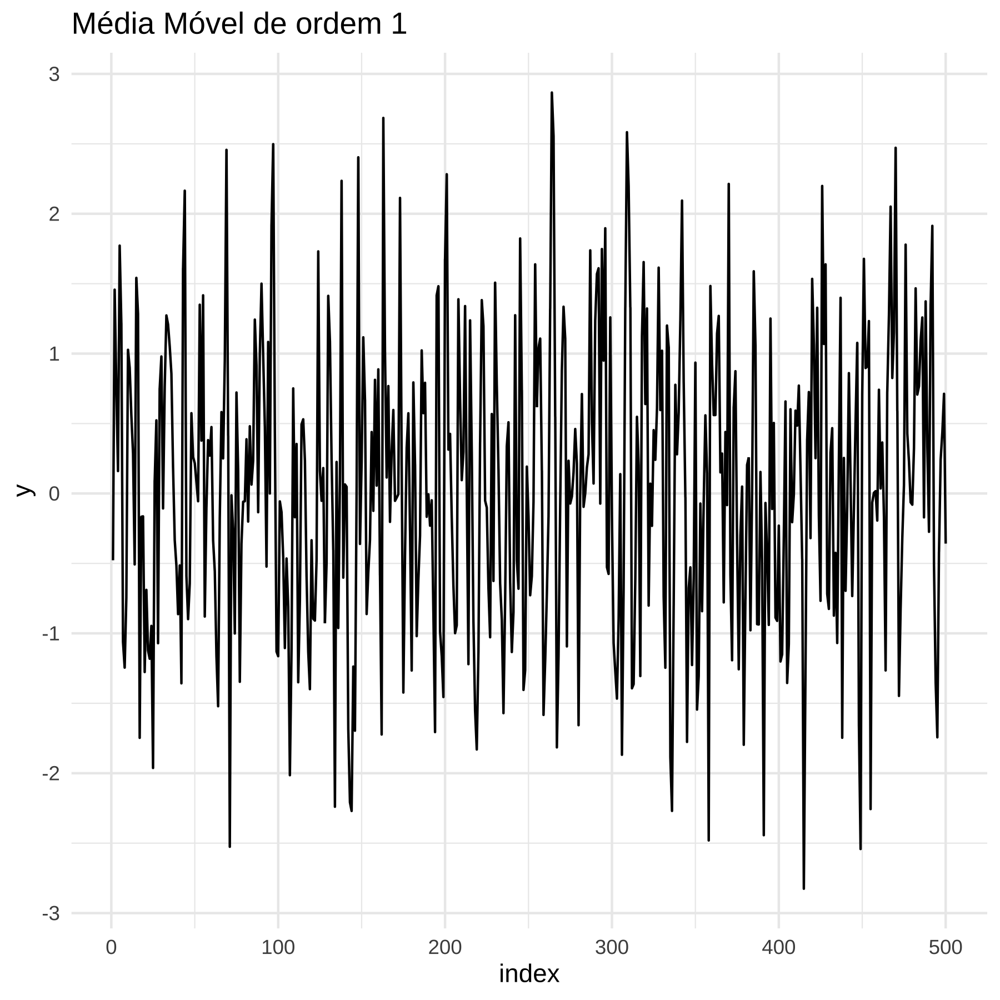
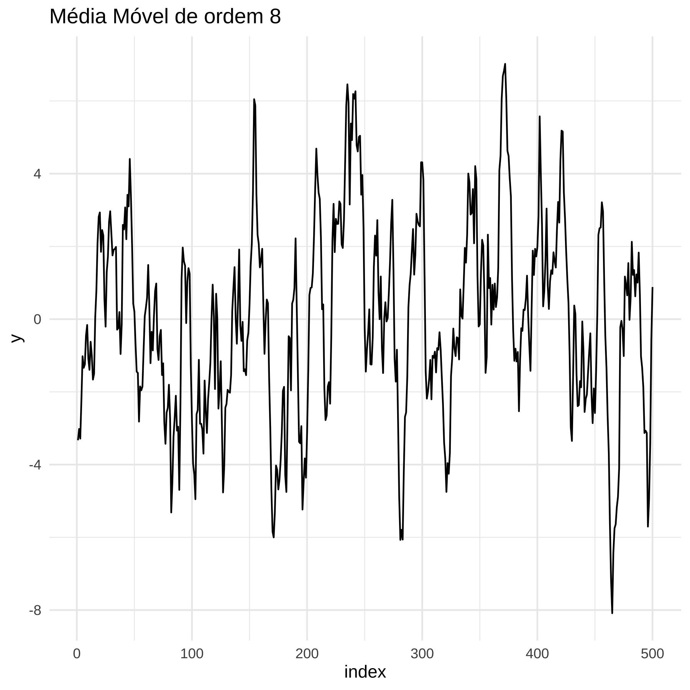

Capítulo 14 - Apêndice
Iremos tratar aqui de tópicos especiais. Em primeiro lugar, do R. Vamos listar aqui os pacotes do R que eu mais utilizo e as principais funções.
14.1 Importação
Para ler arquivos em csv ou formato tabular, prefiro a função fread do data.table.
Para ler arquivos de outrossoftwares, como stata ou SPSS, vejam as funções do pacote haven.
Para arquivos em formato xls ou xlsx, do Excel, uso a função read_excel do pacote readxl.
14.2 Gráficos e Tabelas
Para visualização, uso o ggplot e pacotes que dialogam com o ggplot2. A única exceção é para plotar o gráfico da logística, que usei o R base e a função curve.
Para gerar tabelas em Rmarkdown, uso quatro funções (deveria ser mais consistente e usar só uma ou duas), kable do knitr, gt do pacote de mesmo nome, stargazer, também do pacote de mesmo nome e a função etable do pacote fixest, quando rodo regressões desse pacote.
14.3 Limpeza de dados
Para limpeza de dados, além do tidyverse e tidyr, uso o pacote janitor (particularmente a função clean_names) e o pacote lubridate para trabalhar com datas. Com relação a textos, o pacote stringr.
14.4 Modelagem de dados
Para regressões limpes, uso o R base e suas funções lm e glm. Para dados em painel, prefiro o pacote fixest e suas funções, como a feols, que evita de eu ter de chamar o pacote sandwich para erro padrão robusto. O fixest é melhor que o mais tradicional e antigo pacote plm, que era mais usado para dados em painel antigamente. Para modelos Bayesianos, vario entre rstanarm e brms.
14.5 Outros
Checagem do modelo, o pacote performance.
Para testes informais de permutação, o pacote nullabor.
Para instalação de pacotes direto do gihutb, devtools.
Para ajudar na reproducibilidade, uso o pacote here para não vincular aos meus diretórios específicos e evito usar osetwd para apontar o diretório.
14.6 Álgebra Linear
Aqui apresentamos alguns tópicos de álgebra linear que podem ser úteis.
14.6.1 Espaço de vetores e subspaço
O espaço vetorial de dimensão \(n\) é o conjunto infinito de todos os vetores \(x = [x_1, x_2, \cdots, x_n]\), e as coordenadas \(x-i\) podem ser quaisquer números reais.
Dizemos que um subespaço do espaço vetorial \(n\)-dimensional que é gerado por um conjunto de \(k\) vetores \(x = [x_1, x_2, \cdots, x_k]\), em que \(k\) pode ser eventualmente igual a \(n\) (ou menor), é o subconjunto de vetores \(y\) naquele espaço que pode ser expresso como uma combinação linear do conjunto gerador:
\(y = a_1x_1 + a_2x_2 + \cdots + a_kx_k\)
Dizemos que o conjunto de vetores \(x = [x_1, x_2, \cdots, x_k]\) gera o subespaço que ele define.
14.6.2 Projeção linear
# Load necessary library
library(ggplot2)
# Define vectors u and v
u <- c(3, 2)
v <- c(4, 0)
# Calculate the projection of u onto v
proj_v_u <- (sum(u * v) / sum(v * v)) * v
# Create a data frame for plotting
data <- data.frame(
x = c(0, u[1], 0, v[1], 0, proj_v_u[1]),
y = c(0, u[2], 0, v[2], 0, proj_v_u[2]),
label = c("Origin", "u", "Origin", "v", "Origin", "Projection")
)
# Create the plot
ggplot(data) +
geom_segment(aes(x = x[1], y = y[1], xend = x[2], yend = y[2]), arrow = arrow(length = unit(0.3, "cm")), color = "blue", size = 1.2) +
geom_segment(aes(x = x[3], y = y[3], xend = x[4], yend = y[4]), arrow = arrow(length = unit(0.3, "cm")), color = "red", size = 1.2) +
geom_segment(aes(x = x[5], y = y[5], xend = x[6], yend = y[6]), linetype = "dashed", color = "green", size = 1.2) +
annotate("text", x = u[1] + 0.5, y = u[2], label = "u", color = "blue") +
annotate("text", x = v[1] + 0.5, y = v[2], label = "v", color = "red") +
annotate("text", x = proj_v_u[1] + 0.5, y = proj_v_u[2], label = "proj_v_u", color = "green") +
xlim(0, max(u[1], v[1], proj_v_u[1]) + 1) +
ylim(0, max(u[2], v[2], proj_v_u[2]) + 1) +
theme_minimal() +
labs(title = "Projection of Vector u onto Vector v",
x = "X-axis",
y = "Y-axis")## Warning in geom_segment(aes(x = x[1], y = y[1], xend = x[2], yend = y[2]), : All aesthetics have length 1, but the data has 6 rows.
## ℹ Please consider using `annotate()` or provide this layer with data
## containing a single row.## Warning in geom_segment(aes(x = x[3], y = y[3], xend = x[4], yend = y[4]), : All aesthetics have length 1, but the data has 6 rows.
## ℹ Please consider using `annotate()` or provide this layer with data
## containing a single row.## Warning in geom_segment(aes(x = x[5], y = y[5], xend = x[6], yend = y[6]), : All aesthetics have length 1, but the data has 6 rows.
## ℹ Please consider using `annotate()` or provide this layer with data
## containing a single row.
The plot above shows the vectors \(\mathbf{u}\) (in blue) and \(\mathbf{v}\) (in red), along with the projection of \(\mathbf{u}\) onto \(\mathbf{v}\) (in green, dashed line). The projection is the closest point on the line defined by \(\mathbf{v}\) to the point represented by \(\mathbf{u}\). This visualization helps in understanding how projections work in a geometric sense.
14.7 Econometria de série de tempo
Uma série de tempo é caracterizada por um vetor do tipo \(\{y_t, y_{t+1}, y_{t+2}, \cdot + t_{t+k}\}\). Em uma análise de corte transversal, nós tipicamente assumimos que a amostra era aleatória e iid. Aqui, essa suposição não é plausível devido à provável correlação temporal. A razão pela qual assumimos iid é porque precisamos alguma forma de constância para que possamos aprender algo sobre a nossa variável. Se o passado não se assemelhar ao futuro, nada poderá ser aprendido.
Tipicamente, a constância assumida é estacionariedade. Ela implica que a dsitribuição de \(y_t\) é estável ao longo do tempo. Em particular, que a distribuição de \(y_t\) é independente de \(t\). Isso vai implicar que a média de \(y\) não depende de \(t\), bem como a variância.
14.7.1 Modelos básicos
O modelo mais básico de série de tempo é do tipo:
\[ y_t = \mu + e_t + \theta e_{t-1} \] Nesse modelo, vemos que o \(y\) do presente depende do erro presente e do erro do passado imediato. Nós dizemos que o termo de erro segue uma Moving Average de ordem 1, denotado por \(MA(1)\). O termo Média Móvel vem do fato de que o \(y_t\) é uma média ponderada dos erros \(t\) e \(t-1\). Tipicamente assumimos que o termo de erro \(e_t\) possui \(\mathbb{E}[e_t] = 0\) e varância igual a \(\sigma^2\), ou seja, \(e_t \sim N(0, \sigma^2)\). Esse erro é chamado de ruído branco, para indicar que não possui sinal.
Vamos agora provar alguns fatos. Variância de \(y_t\)
\[\begin{align*} Var(y_t) = Var(\mu + e_t + \theta e_{t-1}) \\ \text{como } \mu \text{ é constante, não altera a variância} \\ Var(y_t) = Var(e_t + \theta e_{t-1}) \\ Var(y_t) = Var(e_t) + Var(\theta e_{t-1}) \text{, usando que o erro é idd} \\ Var(y_t) = Var(e_t) + \theta^2 Var(e_{t-1}) \\ Var(y_t) = \sigma^2 + \theta^2 \sigma^2 \\ Var(y_t) = \sigma^2(1 + \theta^2 ) \\ \end{align*}\]
Covariância de ordem 1.
\[\begin{align*} Cov(y_t, y_{t-1}) = Cov(\mu + e_t + \theta e_{t-1}, \mu + e_{t-1} + \theta e_{t-2} ) &= \\ \text{como } \mu \text{ é constante, não altera a covariância} \\ Cov(e_t + \theta e_{t-1}, e_{t-1} + \theta e_{t-2} ) &= \\ Cov(e_t, e_{t-1}) + Cov(e_t, \theta e_{t-2}) + Cov(\theta e_{t-1}, e_{t-1}) + Cov(\theta e_{t-1},\theta e_{t-2} ) &= \\ Cov(e_t, e_{t-1}) + \theta Cov(e_t, e_{t-2}) + \theta Cov( e_{t-1}, e_{t-1}) + \theta^2Cov( e_{t-1}, e_{t-2} ) &= \\ \text{ lembrando que os erros são iid} \\ 0 + \theta 0 + \theta \sigma^2 + \theta^2 0 &= \\ \theta \sigma^2 \\ \end{align*}\]
Correlação de ordem 1
\[\begin{align*} cor(y_t, y_{t-1}) = \frac{Cov(y_t, y_{t-1})}{sd(y_t) sd(y_{t-1})} \\ cor(y_t, y_{t-1}) = \frac{\theta \sigma^2}{sd(y_t) sd(y_{t})} \\ cor(y_t, y_{t-1}) = \frac{\theta \sigma^2}{\sigma^2(1 + \theta^2 )} \\ cor(y_t, y_{t-1}) = \frac{\theta}{(1 + \theta^2 )} \\ \end{align*}\]
E também é possível mostrar que a correlação de ordem maior que 1 é zero.
Em geral, precisamos especificar o que acontece no primeiro período da série, e tipicamente estabelecemso algo como \(y_{t0} = y_0\). Vale escrever a equação acima com o termo de erro do lado direito e notar que existe auto-correlação serial:
\[\begin{align} y_{t} = \mu + e_{t} + \theta e_{t-1} \\ e_{t} = \theta e_{t-1} - y_{t} \\ \text{vejamos agora a equação para o período } t+1 e_{t+1} = \theta e_{t} - y_{t+1} \\ \text{substituindo } e_{t} \\ e_{t+1} = \theta (\theta e_{t-1} - y_{t}) - y_{t+1} \\ e_{t+1} = \theta \theta e_{t-1} - \theta y_{t} - y_{t+1} \\ \end{align}\]
De maneira geral, temos que o erro em \(t\) possui correlação com o erro em \(t-1\) dada por \(theta\) e para \(t-2\) com \(\theta^2\) e assim por diante para períodos maiores. Isso é o que configura a correlação serial de um processo \(AR(1)\).
Vejamos um exemplo rápido no R.

14.7.2 AR1
Um outro modelo básico é um Processo AutoRegressivo de Primeira Ordem, denotado de AR(1).
\[ y_t = \alpha_0 + \alpha_1 y_{t-1} + e_t \]
Um exemplo simples é a popularidade presencial. Seja \(y_t\) a popularidade presidencial em uma escala de 0 a 10. Suponha que existe um nível mínimo de partidários (percentual da população) que sempre apoiam o presidente \(\alpha_0\) e que um percentual aleatório de pessoas mudam de opinião sobre aprovação do presidente. Então, podemos fazer um modelo simples dado pela equação acima.
## Don't know how to automatically pick scale for object of type <ts>.
## Defaulting to continuous.
## [1] 0.499343## Don't know how to automatically pick scale for object of type <ts>.
## Defaulting to continuous.
Um modelo que combina um AR de ordem \(p\) com MA de ordem \(q\) é chamado de \(ARMA(p,q)\).
14.7.3 TSCS
É raro que em ciência política analisamos um modelo de série de tempo sem preditores e para uma única unidade. Em geral, temos vários preditores e várias unidades. Esses dados são chamados em ciência política de Série de Tempo com Corte Tranversal, tipicamente abreviados em inglês para TSCS (Time Series Cross Section). Em economia esses dados são chamados de painel. Na epidemiologia, são dados longitudinais.
A forma básica desses dados requer que tenhamos medidas das mesmas unidades \(i\) ao longo de vários períodos de tempo \(t\).
14.7.4 Modelo estático e dinâmico
Esses modelos podem ser estáticos ou dinâmicos. Modelos estáticos incluem apenas relações contemporâneas (no mesmo período de tempo) entre variáveis. Esse tipo de de modelo é apropriado quando um preditor ou múiltiplos preditores produzem mudanças instantâneas (no período considerado). Uma equação típica seria:
\[ y_{it} = \alpha + \beta_1x_{1it} + \beta_2x_{2it} + \cdots + \beta_px_{pit} + e_{it} \]
Já um modelo dinâmico captura relação entre valores correntes e defasados (lagged) dos preditores com a resposta. Um exemplo simples com \(m\) termos defasados seria:
\[ y_{it} = \alpha + \beta_1x_{1it} + \beta_2x_{2it-1} + \cdots + \beta_2x_{2it-m} e_{it} \]
Esses modelos trazem a complicação adicional de que temos de considerar possibilidade de termos um componente autoregresivo ou de média móvel na dimensão temporal, como vimos acima. E isso altera as condições para que um estimador não seja viesado.
Não temos tempo de aprofundar isso aqui, mas eu quero pelo menos introduzir o principal tipo de modelo que é utilizado, que é o chamado modelo de efeitos fixos.
14.7.5 Efeitos Fixos
Vamos supor que queremos medir o efeito do número efetivo de partidos sobre percentual de mulheres eleitas. Podemos esperar que quanto maior a fragmentação partidária, mais difícil mulheres serem eleitas. Um problema de uma regressão com fragmentação partidária e percentual de mulheres eleitas, do ponto de vista causal, é que podemos ter viés de seleção. Por exemplo, pode acontecer de estados que no passado tiveram mais mobilização feminista tenha menos partidos e também eleja mais mulheres. Vamos chamar essa variável de \(U\), para indicar que é não observada (unobserved, em inglês).
\[ y_{it} = \alpha + \beta x_{it} + u_i + e_{it} \] Em que \(x_t\) é o número de partido (ou alguma medida de fragmentação partidária) em \(t\), e \(u_i\) é a presença ou não de mobilização feminista no passado (pré período \(t\)).
Considere que temos dois períodos, \(1\) e \(2\). Temos então uma equação de regressão para cada período.
A ideia do modelo de efeitos fixos é simplesmente rodar uma regressão em que computamos a média de todas as variáveis do modelo e subtraímos essa média. Formalmente:
\[\begin{align} \text{Sejam } \bar{y}_i = \frac{y_{i1} + y_{i2}}{2}, \bar{x}_i = \frac{x_{i1} + x_{i2}}{2}, \bar{u}_i = \frac{u_{i} + u_{i}}{2} = u_i \text{ e } \bar{e}_i = \frac{e_{i1} + e_{i2}}{2} \text{ as médias no tempo para cada invíduo de cada variável} \\ \end{align}\]
Obtemos assim uma equação de regressão alternativa com a média: \[ \bar{y}_i = \alpha + \beta \bar{x}_i + \bar{u}_i + \bar{e}_i \] Agora, subtraindo da equação principal, temos:
\[\begin{align} y_{it} - \bar{y}_i = \alpha - \alpha + \beta x_{it} - \bar{x}_i + u_i -\bar{u_i} + e_{it} - \bar{e}_i &= \\ \tilde{y}_{it} = \beta \tilde{x}_{it} + \tilde{e}_{it} \end{align}\]
Uma formulação alternativa, com dois períodos, é dada pela primeira diferença, isto é, \(y_{i, 2} - y_{i,1}\):
\[\begin{align} y_{i, 2} - y_{i,1} = \alpha - \alpha + \beta x_{i,2} - \beta x_{i,1} + u_i -u_i + e_{i,2} - e_{i,1} &= \\ \beta x_{i,2} - x_{i,1} + e_{i,2} - e_{i,1} \end{align}\]
Isso significa que conseguimos eliminar a variável de confusão não-observada que gerava viés de seleção, efetivamente controlando para ela. Para isso, precisamos subtrair a média de cada variável, ou, equivalentemente, computar a primeira diferença.
Note que calculamos a média para cada indivíduo. Poderíamos ter também calculado a média para cada período de tempo. Nesse caso, teríamos o chamado efeito fixo de tempo. Quando usamos os dois efeitos fixos (de tempo e unidade), tempos o chamado “two-way fixed effects”. E no caso de dois períodos é equivalente ao método conhecido como diferença-em-diferenças.
O ponto fundamental desse método é que ele elimina confoudings de efeitos invariantes no tempo por unidade e efeitos comuns a todas as unidades no tempo (invariantes por unidade).
14.8 Dados Espaciais
Há dois tipos de dados espaciais diferentes que se traduzem em visualizações distintas. Em primeiro lugar, temos dados espaciais em pontos, que podem ser plotados como conjuntos de pontos em um mapa. Designam localizações específicas, como cidades ou quaisquer objetos discretos definidos em um espaço. E em segundo lugar, temos dados espaciais de polígonos, que representam uma sequência de pontos conectados espacialmente (em geral fronteiras) que formam um área.
Dados em formato de polígonos usualmente são distribuídos na forma de shapefiles.
14.8.1 Regressão espacial
Quando falamos de regressão espacial, tipicamente estamos tratando de dados espaciais em pontos, isto é, unidades que se localizam no espaço, como cidades, bairros ou distritos. E de maneira análoga ao que tratamos em série de tempo de que os dados podem ter autocorrelação temporal, também podem ter autocorrelação espacial.
Só que, ao contrário do tempo, em que a direção de causalidade vai sempre do passado para o futuro, no caso espacial, unidades vizinhas podem causar umas as outras, de modo que a modelagem é mais complexa, o que impede-nos de aprofundar aqui no curso esse tópico.
De todo modo, vale a pena apresentar dois modelos básicos:
14.8.1.1 Spatial lag (Outcome) model
O modelo espacial defasado tipicamente ocorre quando a variável resposta \(y\) com aspecto espacial é incluída como preditor. Isso acontece quando queremos modelar algum processo de difusão ou contágio da variável resposta. Um exemplo comum em Relações Internacionais é o de estudos sobre o efeito de assinar tratados de proteção a investimento sobre o volume de investimento estrangeiro direto (IED). Se o país vizinho recebe mais investimento (por exemplo OpenAi decide construir um data-center na Argentina) isso impacta o volume de investimentos no Brasil e vice-versa.
14.8.1.2 Spatially lagged (predictor) variable
Aqui, estamos interessados na difusão ou spillover do tratamento. Considerando o exemplo acima, se um país vizinho assina um tratado de proteção a investimento isso impacta não apenas a atração de investimento no país, mas também no vizinho.
14.8.1.3 Spatial error model
Por fim, também podemos concluir que variáveis não observadas podem induzir difusão ou contágio, de modo que o termo de erro terá um cumponente espacial.
A especificação da regressão para cada tipo de modelo (ou uma combinação de um ou mais tipos pode ser feita) é dada por:
- Resposta defasada espacialmente.
\[ y_{i} = \alpha + \rho Wy_{-i} + \beta x_i + e_i \]
- Preditor defasado espacialmente.
\[ y_{i} = \alpha + \rho Wx_{-i} + \beta x_i + e_i \] 3. Termo de erro defasado espacialmente.
\[\begin{align} y_{i} = \alpha + \beta x_i + e_i \\ e_i = \lambda We_{-i} + \epsilon_i \end{align}\]
Em todos os casos, \(W\) é a matriz de pesos espaciais. Se apenas vizinhos diretos podem influenciar uns aos outros, então ela terá peso zero para países que não são vizinhos. Tipicamente este é o caso, pois o número de parâmetros aumenta muito se todos os países puderem influenciar todos os países e pode acabar sendo maior do que o número de observações.
Por fim, é possível combinar aspectos temporais e espaciais em uma única análise. Na prática isso é raro, pois requer conhecimentos especializados de duas sub-áreas distintas. No geral a maioria dos trabalhos em ciência política e Relações Internacionais ignora as correlações espaciais.